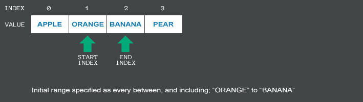

Introduction to Unify Enumerators
Namespace: Unify.Collections, Unify.Collections.Generic
Assembly: Unify.Collections.dll
This section provides examples to accompany the Unify API documentation on Unify Enumerators.
To get you up and running quickly, examples have been kept as simple as possible, using only the Unity Console.
Unify Enumerator types
Unify provides three types of enumerators out-of-the-box; Standard, Yo-Yo and Random, available through the following classes:
See : Creating and Using Unify Enumerators
Features
As well as having the basic functionality of iterating over a collection, Unify Enumerators also provide the following features:
- Allow modification of the underlying collection while iterating
- Iterate over a partial collection
- Loop an iteration
- Step over items at a specified interval
- A MovePrevious() method
- Re-use through the Reset() method
- Event System
Controlling the behaviour of Unify Enumertors
The behaviour of a Unify Enumerator is controlled through Unify's Enumerable Range feature, which is implemented by the UnifyEnumerableRange class. This class exposes the properties necessary to implement some of the features mentioned above, namely; specifying a range to iterate, looping the iteration, stepping over items while iterating and wheather the underlying collection should be locked.
This behaviour is controlled using the following properties:
Start Index
The startIndex property specifies the index from which the Unify Enumerator should start iterating over the underlying collection. This value is inclusive. The default value is specified by the UnifyEnumerableRange.AlwaysFirstItem constant; which is defined as always being the first item in the collection.
End Index
The endIndex property specifies the index at which the Unify Enumerator should stop iterating over the underlying collction. This value is inclusive. The default value is specified by the UnifyEnumerableRange.AlwaysLastItem constant; which is defined as always being the last item in the collection.
Loop Count
The loopCount property specifies how many times the Unify Enumerator should enumerate the underlying collection. The default value is 1, specified by the UnifyEnumerableRange.DefaultLoopCount constant.
Step
The step property specifies the interval at which the Unify Enumerator should move over the underlying collction, e.g. with a value of 1, Unify will iterate over every item in the collection between the startIndex and endIndex values inclusive; a value of 2 will iterate over every other item in the collection between the startIndex and endIndex values inclusive. The default value is 1, specified by the UnifyEnumerableRange.DefaultStep constant.
Locked
When a Unify Enumerator is locked onto a collection, by setting the locked property to true, a snapshot is taken of the items in the underlying collection that are covered by the startIndex, endIndex and step values at the time the Unify Enumerator was created. Only those items in the snapshot will then be iterated, regardless of any subsequent changes made to the underlying collection. A Unify Enumerator will ignore items added or inserted to the underlying collection after it was created. However, items that are removed from the underlying collection will not be ignored, those items will be removed from the snapshot and not iterated over. The default value for locked is false, specified by the UnifyEnumerableRange.DefaultLocked constant.
Creating a Unify Enumerable Range
A UnifyEnumerableRange instance can be created by using the new() operator. The constructor accepts the parameters; startIndex, endIndex, loopCount, step and locked. All parameters are optional, default values are used for any parameter not specified. A UnifyEnumerableRange instance is mutable.
Unify Enumerators provide two constructors to initialise Enumerable Range values; the first takes a UnifyEnumerableRange instance, and the other takes each of the Enumerable Range properties as optional parameters. The following code snippet shows how to create a Unify Enumerator with an Enumerable Range, using each constructor:
IUnifyList<string> list = new UnifyList<string> { "Hello,", "Unify", "World!" };
// Create an enumerable range with unnamed parameter values for startIndex, endIndex, step, loopCount and locked
UnifyEnumerableRange range = new UnifyEnumerableRange(0, 4, 1, 2, false);
// A more readable method using named parameters
UnifyEnumerableRange range = new UnifyEnumerableRange(startIndex: 0, endIndex: 3, step: 2, loopCount: 2, locked: true);
// Not all parameters have to be specified
UnifyEnumerableRange range = new UnifyEnumerableRange(endIndex: 4, loopCount: 2);
// Object Initializer Syntax
UnifyEnumerableRange range = new UnifyEnumerableRange() { startIndex = 8, endIndex = 1, step = 2 };
// Create an enumerator using the specified enumerable range
IUnifyEnumerator en = new UnifyEnumerator<string>(list, range);
// Create an enumerator using unnamed parameters
IUnifyEnumerator en = new UnifyEnumerator<string>(list, 3, 7, 2, 1, true);
// Use named parameters for readability
IUnifyEnumerator en = new UnifyEnumerator<string>(list, startIndex: 5, endIndex: 0, step: 2, loopCount: 2, locked: false);
// Not all parameters have to be specified
IUnifyEnumerator en = new UnifyEnumerator<string>(list, startIndex: 5, loopCount: 2, locked: true);
Although UnifyEnumerableRange instances are mutable, a Unify Enumerators Enumerable Range values are not; once a Unify Enumerator has Enumerable Range values set, they cannot be changed from the Unify Enumerator instance.
Modifying the underlying collection
Unify Enumerators allow the underlying collection to be modified while iterating; items can be added, inserted or removed during the iteration process and Unify will adjust the startIndex and endIndex property values on-the-fly.
To use this functionality the underlying collection must implement either of Unify's IUnifyObservableCollection<T> or IUnifyObservableCollection interface types; the UnifyList<T> class implements both of these interfaces.
Unify will use the following rules when the underlying collection is modified during iteration:
- If an item is inserted before the current item position; the pointer will move to the right to maintain the current item position
- If an item is removed before the current item position; the pointer will move to the left to maintain the current item position
- If an item is inserted or removed after the current item position; the pointer remains unchanged
The following animation shows how Unify Enumerators adjust their position as the underlying collection is modified.

Events
Unify Enumerators provide the following events:
- PassComplete - triggered each time a Unify Enumerator successfully completes each pass of a loop
- Invalidated - triggered when a Unify Enumerator has no valid next or previous item to move to
- ResetFailed - triggered when a Unify Enumerator remains in an invalid state after calling Reset()
- Finished - triggered when a Unify Enumerator successfully finishes
Exceptions
Unify will always throw an exception when trying to set properties or parameters to an invalid value. Specific details are provided in each relevant section.